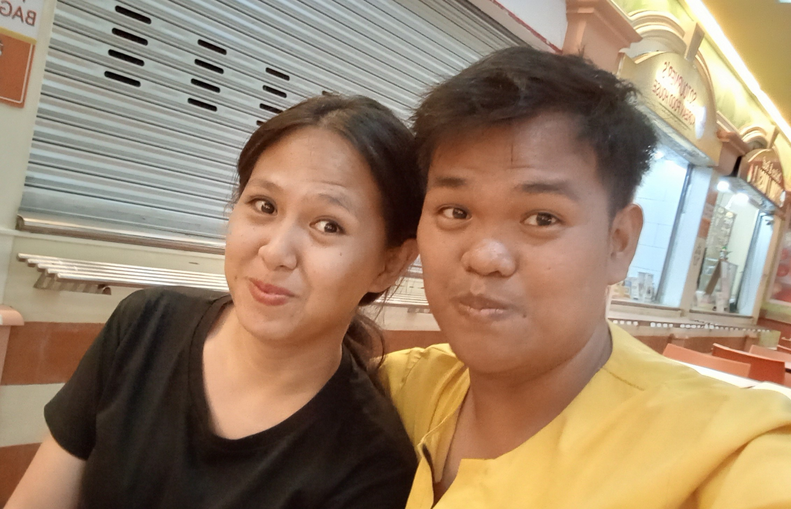
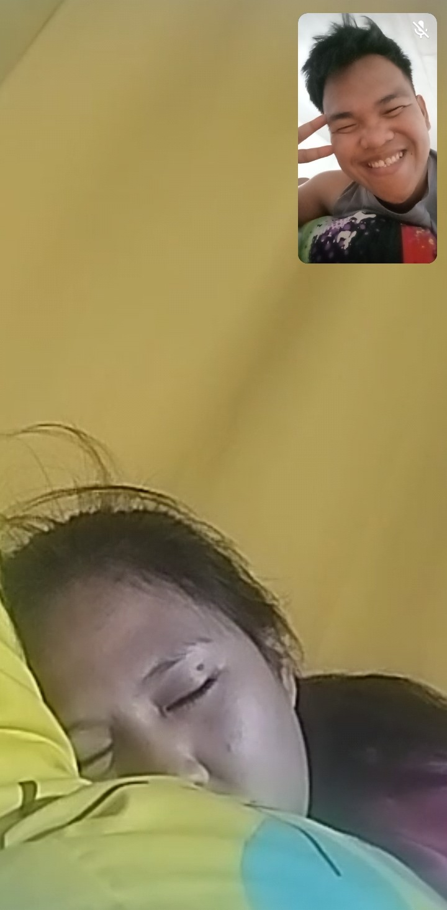
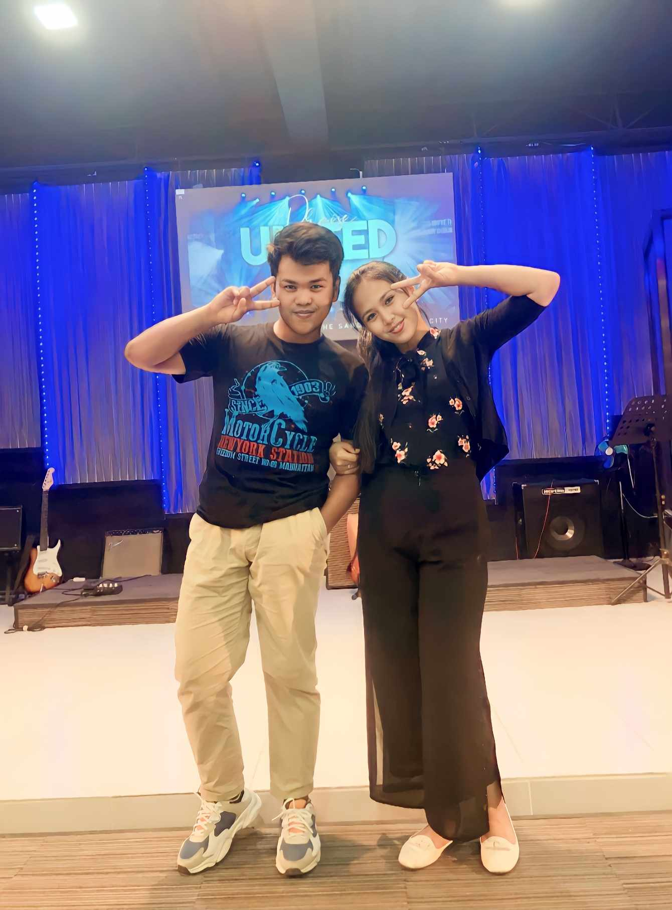
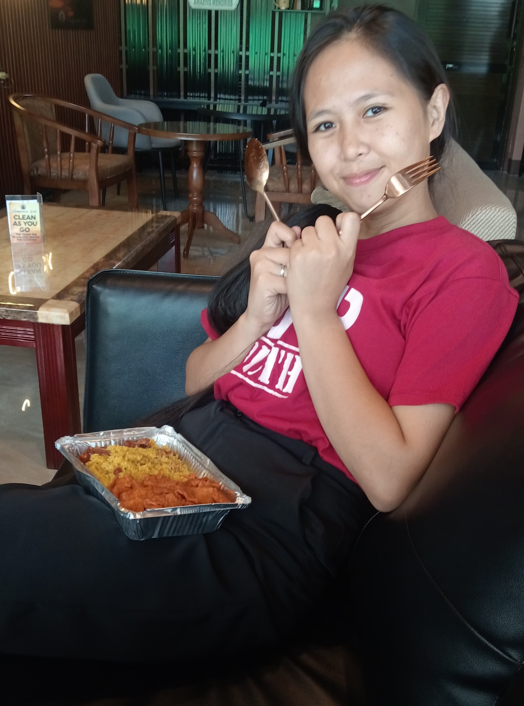
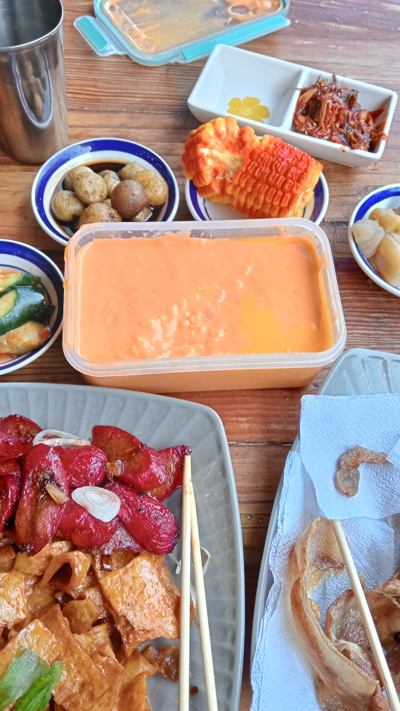
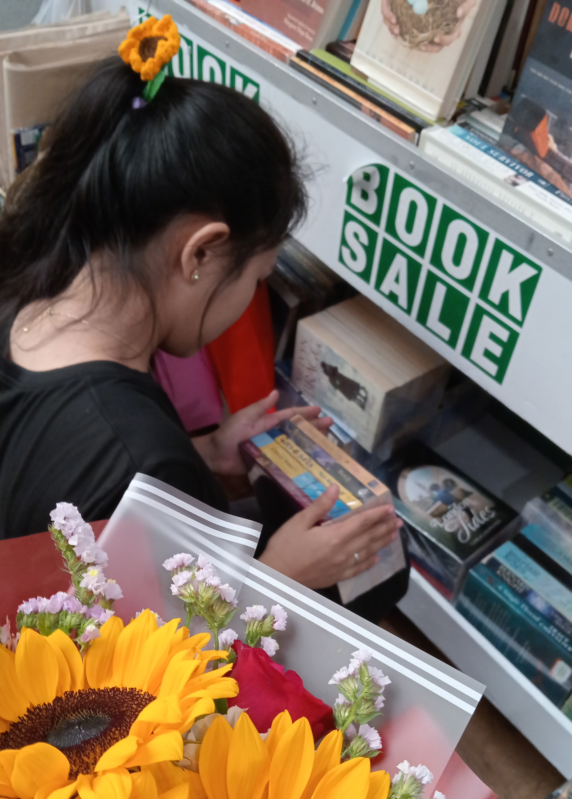
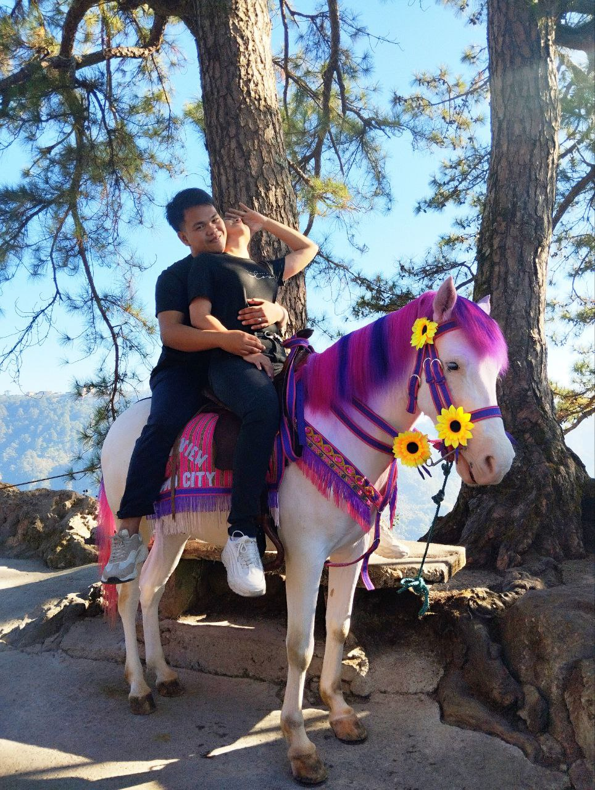
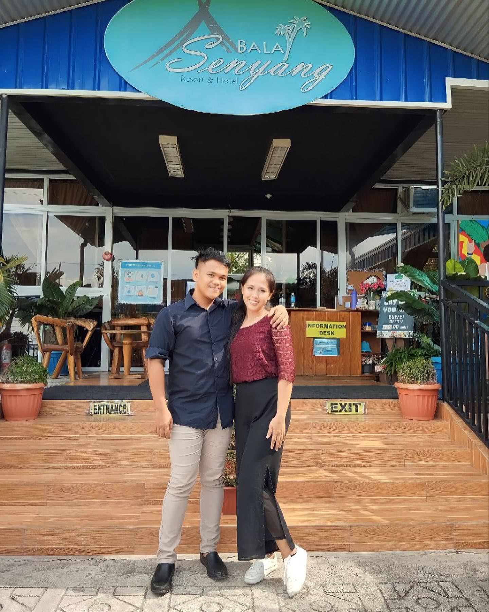

HAPPY
6th
MONTHSARY

Oo, HAHAH lagi mo po akong natutulugan, wala napong bago doon and hinding hindi ako magagalit kapag natutulugan mo ako. Kasi it just mean na sobrang comfortable ka saakin that you can sleep right away lalo habang nag kukwentuhan HAHAHA. I will never change this in you hehe. and no need to apologize okay? I love you!

This is a memorable picture na nag spoken poetry tayo and grabe
sobrang daming naiyak, naka relate and all. Grabe noh?
When we're practicing sabi ko talaga, "Gash, this is
a dream come true." Imagine ka spoken poetry ko yung pinaka mamahal ko diba.
I was amazed and fell in love over and over again for you. And I know we'll
create more spoken poetry soon hehe. I love you!

Graduation ko tong picture na to and I'm so happy and grateful that
I'm with you. Although nagkaroon ng problema atleast ngayon okay na diba.
Pero I didn't expect na after ko maka graduate eh saka mo ako sasagutin.
Kaso after 17 days ko lang narealize nung sinabe mo na tayo na HAHAH unforgettable na pag sagot sa akin HAHAHA

Happy kiddo ka dito kasi natikman mo nanaman yung luto ko HAHAHAHA.
You always enjoy my cooking and I really enjoy serving you kasi seeing your smile, your laugh...
ibang klase love as in. I love seeing you smile and laugh, nakaka adik yung ngiti mo
alam mo ba iyon? HAHA pero alam mo naman na yon eh AHAHAHA na baliw na baliw ako sayo HAHAHA
I'm happy to serve you, love. And I'm glad na napaka galing mopong kumain hehe.
Ikaw lang pinag lutuan ko kung di ako nagkakamali HAHA. Kaya I hope you always enjoy my cooking hehe.

Ito yung cheese na gustong gusto mo HAHAHA Dati mula nung natikman
mo yung cheese ko hinahanap hanap mo na eh. Mula noon gawa na ako
ng gawa ng cheese HAHAHA pero I love the to see you so excited lalo kapag
nakikita mo na may ginawa akong cheese HAHA. Ang saya saya mo lagi, love.
Kaya kapag nag di-date tayo mas gusto kong pinag lulutuan ka kesa kumakain tayo sa labas.

Adik ka sa libro and sunflower HAHA, kaya I never stopped you from
buying books at iniispoil kita sa sunflower HAHAHAH. Grabe yung tuwa
mo kapag nakikita na yung booksale eh HAHA. As in nawawala yung mga reklamo
mo na pagod kana ganito ganyan AHAHA kaya nililibre ko lagi books mo.
Para may nababasa basa ka ganon. Atleast diba may nababasa ka. And bookworm yung girlfriend ko eh HAHAHAH

Tawang tawa ako dito HAHAHA kasi naman hindi ko alam na gaganon ka ng pose HAHAHA
Tapos sabi ko pa... "Anong pose natin?" Tas nag pose ka ng sarili mo kaya ngumiti nalang
ako AHAHAHA kaya ayan kinalabasan ng pic natin HAHAHA. But it was a great day nung
pumunta po tayo ng Baguio for your birthday hehe. And napaka disney princess mo lagi kapag
kasama mo ako HAHAHA nag eenjoy ako na pagsilbihan ka eh AHAHAHA kaya ayon. AHAHA I love you!

Nabitin ka dito kasi sinabayan mo kaming kumain eh mabilis sila kumain
tapos ikaw mabagal at madami makakain mo HAHAHA hindi ka nagsabi pero alam ko na
hindi ka ganon nabusog HAHAHA. This is one of the best day of my life because we
ate together with my family and ayon love, sobrang saya lang po na kasama natin sila mama.
Thank you for coming, love. I love you so much, pinaka mamahal koooo.